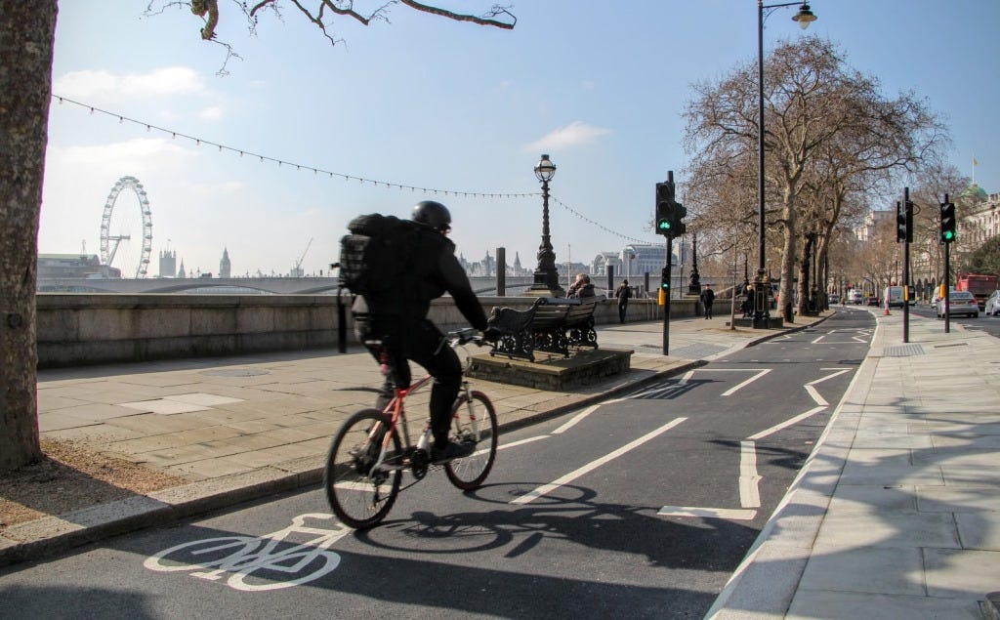

An interactive platform exploring how cycle networks improve urban connectivity and promote low-carbon, active travel across London.
London CycleNet brings together multiple datasets in one place, including: cycle networks, bicycle parking, university locations, Underground stations, and bicycle accident data. It helps students assess bike accessibility to their universities and visualises reachability within 15-minute rides while supporting the GLA and local councils in analysing accident trends to promote safer spaces.
London’s cycle network is rapidly expanding. The Cycling Action Plan aims to make cycling safer and more connected, encouraging active travel for all Londoners.
Sadiq Khan – Mayor of London has largely been in favour of active travel, setting goals such as 70% of London residents achieving at least 20 minutes of active travel per day by 2041 (Travel in London 2023, p.5).
Between 2015 and 2024, daily cycling trips rose by 237,961—a 21% increase over that period.
Source: TfL Strategic Analysis, Customer & Strategy
https://tfl.gov.uk/cdn/static/cms/documents/travel-in-london-2024-active-travel-trends-data-acc.xlsx
Note: Data for 2020–2021 is absent due to COVID-19 restrictions
Here are several key policies and plans that are crucial to the development of cycle networks.
Greatest risk of injury: 80% of deaths and serious injuries occur to people walking, cycling, or riding motorcycles (Vision Zero Action Plan, 2018, p.15).
| Dataset Name | Timeframe | Source |
|---|---|---|
| Cycle Network for London | September 2021 |
Accessed via OSMnx: OpenStreetMap TfL Cycling Data |
| Bicycle Parking | September 2021 | TfL Cycling Data |
| Universities | March 2025 |
Accessed via Digimap OS Student License: Digimap OS Ordnance Survey POI |
| Underground Tube Stations | March 2025 |
Accessed via Digimap OS Student License: Digimap OS Ordnance Survey POI |
| Road Accidents | 2018 - 2023 | UK Road Accidents Safety Data |
| Travel to Work Method | 2021 | Census 2021 RM077 |
| LSOA Workday Population | 2021 | London Census 2021 Workday Population |
| LSOA Boundaries | 2021 | London GIS Boundary Files |
| Greater London Authority (GLA) Boundary | N/A | GLA Boundary Zip |